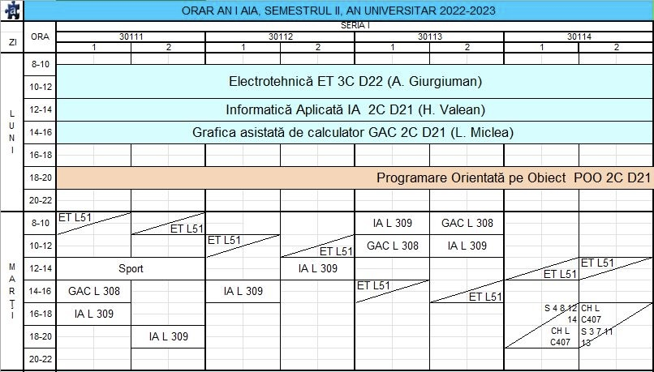

Prof. univ. dr. ing. Vasile ŢOPA
Dr. Ing. Lia CHIOREAN
Sergiu Covaci
Haide să pictăm orarul împreună! La început, s-ar putea să pară complicat și dificil de înțeles, dar nu-ți face griji, o să-l facem mai clar și mai ușor de înțeles împreună!
În partea superioară a orarului, vei găsi numărul grupei tale, urmat de coloanele cu orarul specific al grupei. Linia verticală împarte grupele în semigrupe. Astfel, vei avea ore comune cu toată grupa, de obicei seminarii, iar altele doar cu semigrupa, numite laboratoare.
C - CURS
L - LABORATOR
S - SEMINAR
P - PROIECT
În dreptul fiecărei discipline, vei găsi menționate tipul activității (curs, seminar, laborator etc.), urmat de numele profesorului responsabil și sala în care se va desfășura activitatea didactică.
După aceea, vei observa că unele căsuțe sunt separate de o diagonală. Acest lucru înseamnă că activitățile din partea de sus vor avea loc în săptămânile impare ale semestrului, iar cele din partea de jos în săptămânile pare.
Dacă vei consulta orarul de pe telefon, este posibil ca diagonala să nu fie vizibilă, așa că asigură-te că verifici cu atenție orarul.
Dacă nu poți ajunge la un seminar sau laborator, poți să vorbești în avans cu profesorul, care, cel mai probabil, te va primi în altă grupă sau semigrupă în aceeași săptămână. Asigură-te că verifici orarul și planifici din timp!
Acum că am prins ideea de cum să descifrăm orarul și ce cuprinde, hai să aruncăm o privire asupra termenilor specifici și să vedem prin ce se deosebesc tipurile de activități didactice.
Totodată, vei mai auzi că anul de studiu se împarte în specializări. Cele mai multe specializări sunt organizate în serii (A, B sau Engleză). Pentru fiecare dintre aceste serii, se desemnează un șef de serie dintre studenți, care are responsabilitatea de a facilita comunicarea între voi și profesori, programarea examenelor și altele. Seriile sunt apoi împărțite în grupe, iar la rândul lor, în semigrupe.
Pe parcursul studenției, vei avea de-a face cu trei forme de evaluare: examen, parțial și colocviu. Pentru a promova, trebuie să obții o notă mai mare sau egală cu 5 indiferent de tipul de evaluare. Totuși, în funcție de disciplină, activitățile desfășurate la seminar, laborator sau proiectele realizate pot influența nota finală. Haide să înțelegem mai bine aceste noțiuni!
Media pentru obținerea bursei se calculează la sfârșitul sesiunii!
ECTS (European Credit Transfer and Accumulation System) este un sistem european de transfer și acumulare a creditelor în învățământul superior. Creditele ECTS reprezintă volumul estimat de muncă al studenților și facilitează recunoașterea internațională a studiilor și mobilitatea între instituții.
Prin intermediul sistemului ECTS, studenții au posibilitatea de a se transfera și continua studiile la universități din străinătate.
De obicei, 30 de credite corespund unui semestru de învățământ superior, iar atunci când ai acumulat toate creditele ECTS, te vei numi integralist.
Numărul de credite nu este același pentru toate disciplinele. Informația despre numărul de credite alocat fiecărei discipline poate fi găsită în fișa disciplinei respective.
SAU
Apasă butonul de mai jos și accesează site-ul dat unde poți să-ți introduci notele și numărul de credite specific fiecărei materii din sesiune, iar acesta îți va calcula media semestrială automat.
Calcul MediePrin activitatea de voluntariat poți obține credite suplimentare, dar nu se va ține cont de acestea pentru calcularea mediei.
Totodată, pentru a trece în anul următor ai nevoie de minim 30 de credite obținute din anul precedent.
În privința restanțelor... Dacă nu ai reușit să promovezi un examen în sesiunea curentă, ai o altă șansă în sesiunea "de toamnă" (care anul acesta a avut loc în august) sau în sesiunile speciale. Aceste sesiuni îți oferă posibilitatea să susții examene din toate materiile, indiferent de anul de studiu.
Taxa variază în funcție de prezența la examinările din sesiunea precedentă:
1.dacă te-ai prezentat la cel puțin una dintre cele două examinări din sesiune, atunci prețul va fi de 100 de lei/examen;
2.dacă nu te-ai prezentat la niciuna dintre cele două examinări din sesiune, atunci prețul va fi de 150 de lei/examen.
Dacă ai promovat un examen, dar simți că poți obține o notă mai bună, ai dreptul la patru măriri de notă pe an, dintre care două sunt gratuite, iar celelalte implică un cost (50 de lei/mărire).
Ca student la Universitatea Tehnică, ai oportunitatea de a obține mai multe tipuri de burse: de performanță academică, de merit, sociale, speciale sau Erasmus. Indiferent de categoria în care te încadrezi, aceste burse sunt acordate pe o perioadă de șase luni.
Bursele pentru stimularea performanței sunt împărțite în două categorii. Bursele de performanță academică sunt acordate, începând cu anul II de studiu, studenților care au obținut cele mai mari medii (nu mai puțin de 9,00) în anul (ulterior, semestrul) precedent. Bursele de performanță științifică se acordă prin intermediul unui concurs organizat de universitate, iar condițiile și criteriile de concurs sunt stabilite de către Consiliul de Administrație.
În plus, o oportunitate interesantă este oferită de bursele Erasmus. Dacă îți dorești să călătorești, să studiezi într-o altă țară și să-ți faci prieteni noi, Erasmus este pentru tine! Acest program îți permite să studiezi în străinătate pentru o perioadă de timp între 3 și 12 luni, având șansa de a explora locuri noi și a experimenta alte culturi.
Nu trebuie să plătești taxe de înscriere sau de studii la universitatea gazdă. Studiile realizate în cadrul programului pot fi echivalate și vor fi luate în considerare la obținerea diplomei. Mai mult, primești o bursă din partea UE pentru a acoperi costurile de cazare și transport.
Universitatea Tehnică din Cluj-Napoca are parteneriate cu universități din toată Europa, astfel că trebuie doar să cauți ce ți se potrivește. Dacă dorești să afli mai multe detalii, poți accesa codul QR pentru a vedea condițiile necesare pentru obținerea acestei burse.
Spre prezentarea ErasmusChiar dacă am abordat majoritatea subiectelor importante legate de Universitate, există câteva aspecte pe care merită să le menționăm și care vor aduce cu siguranță mai mult confort în viața ta de student.
Centrul de Consiliere și Orientare în Carieră
CCOC (Centrul de Consiliere și Orientare în Carieră) este o instituție academică și profesională ce oferă informații, sprijin și monitorizare studenților și absolvenților Universității Tehnice pentru dezvoltarea lor personală și profesională. De asemenea, CCOC facilitează comunicarea între studenți/absolvenți și angajatori. În Cluj-Napoca, acesta este reprezentat prin Oficiul de Consiliere și Orientare în Carieră (OCOC).
Este important de știut că poți să te adresezi OCOC nu doar pentru nelămuriri legate de parcursul profesional, ci și pentru ședințe gratuite de consiliere psihologică. Acești profesioniști sunt disponibili pentru a te ajuta. Poți contacta consilierul de carieră la adresa: office.ococ@ococ.utcluj.ro și consilierul psihologic la adresa: psih.ococ@ococ.utcluj.ro.
Carnetul de student
Carnetul de student este un obiect de care trebuie să ai grijă! Acesta este necesar pentru a te prezenta la examene, a înregistra notele după parțiale și examene (dacă dorești) sau pentru a obține diverse carduri (bibliotecă, transport, ISIC, etc.). Dacă îl pierzi, va trebui să completezi o cerere și să plătești o taxă în valoare de 100 de lei. De aceea, este important să îl păstrezi într-o stare bună.
Cardurile non-bancare
Cunoscute și sub numele de carduri studențești, StudCard, Omnipass și altele îți pot oferi numeroase reduceri, de la cafea și mâncare până la servicii stomatologice, bilete de cinema sau tatuaje. Una dintre cele mai utile reduceri este cea la transportul în comun, despre care vei afla mai multe în capitolul următor.
WEBSINU
SINU este platforma studenților, unde poți crea un cont pe baza CNP-ului și a adresei de e-mail. Aici poți verifica notele din sesiune și evalua cadrele didactice la finalul fiecărui semestru. Pe SINU, ai și opțiunea de a plăti online taxe, cum ar fi regia de cămin, taxele pentru măriri și restanțe, și altele.
Către WEBSINUEvaluarea cadrelor didactice
UTCN, o universitate prestigioasă, se preocupă constant de îmbunătățire și oferă o experiență plăcută de învățare studenților. La finalul fiecărui semestru, poți evalua profesorii anonim prin SINU, folosindu-ți contul de student.